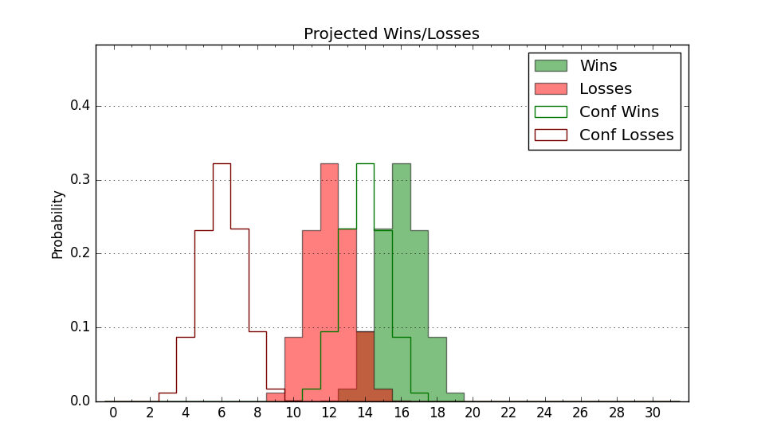

| Home | Game Probabilities | Conferences | Preseason Predictions | Odds Charts | NCAA Tournament |
| City: | Lawrenceville, New Jersey | |
| Conference: | Metro Atlantic (1st)
| |
| Record: | 10-3 (Conf) 12-9 (Overall) | |
| Ratings: | Comp.: -3.4 (207th) Net: -3.3 (207th) Off: 103.2 (156th) Def: 106.6 (256th) SoR: 0.0 (158th) |
| Remaining | ||||||
|---|---|---|---|---|---|---|
| Date | Opponent | Win Prob | Pred. | |||
| 2/10 | Fairfield (232) | 70.9% | W 67-62 | |||
| 2/17 | Canisius (294) | 79.0% | W 75-66 | |||
| 2/19 | @ Quinnipiac (134) | 22.7% | L 67-75 | |||
| 2/24 | Siena (164) | 55.8% | W 69-67 | |||
| 2/26 | Mount St. Mary's (283) | 77.8% | W 70-61 | |||
| 3/2 | @ Saint Peter's (316) | 59.6% | W 65-63 | |||
| 3/4 | Iona (80) | 32.1% | L 68-73 | |||
| Previous | Game Score | |||||
| Date | Opponent | Win Prob | Result | Off | Def | Net |
| 11/8 | @Providence (36) | 6.3% | L 65-66 | 1.4 | 17.7 | 19.1 |
| 11/18 | (N) Stetson (172) | 41.8% | L 68-78 | -11.7 | 1.8 | -9.9 |
| 11/19 | (N) Central Arkansas (330) | 77.4% | L 85-90 | -6.8 | -19.0 | -25.8 |
| 11/22 | @Rutgers (18) | 4.6% | L 46-76 | -13.8 | 0.6 | -13.2 |
| 11/30 | Monmouth (354) | 91.8% | W 88-62 | 9.0 | 0.2 | 9.1 |
| 12/3 | @Mount St. Mary's (283) | 50.7% | W 68-65 | 0.8 | -2.5 | -1.7 |
| 12/7 | @Stonehill (309) | 58.5% | W 78-67 | 8.3 | 2.3 | 10.7 |
| 12/19 | Delaware (227) | 69.1% | L 59-60 | -8.0 | -0.7 | -8.7 |
| 12/22 | Marist (303) | 81.5% | W 77-71 | 6.4 | -14.4 | -8.0 |
| 12/28 | @Georgia (139) | 23.3% | L 72-78 | 3.8 | -4.2 | -0.5 |
| 12/31 | @Canisius (294) | 52.5% | W 66-64 | -8.1 | 5.1 | -3.0 |
| 1/2 | @Niagara (229) | 40.0% | L 59-61 | -7.9 | 1.0 | -6.9 |
| 1/6 | Quinnipiac (134) | 50.1% | L 63-72 | -9.4 | -10.5 | -19.9 |
| 1/8 | @Siena (164) | 27.0% | L 63-68 | -5.5 | 6.5 | 1.1 |
| 1/15 | @Iona (80) | 12.2% | W 70-67 | 11.5 | 10.2 | 21.6 |
| 1/20 | Niagara (229) | 69.4% | W 65-62 | 2.6 | -6.1 | -3.5 |
| 1/22 | Manhattan (319) | 84.1% | W 67-65 | -5.2 | -3.6 | -8.8 |
| 1/27 | @Marist (303) | 56.5% | W 68-52 | 5.6 | 12.5 | 18.1 |
| 1/29 | @Fairfield (232) | 41.7% | W 78-69 | 19.8 | -8.2 | 11.6 |
| 2/3 | Saint Peter's (316) | 83.4% | W 82-61 | 13.0 | 3.2 | 16.3 |
| 2/5 | @Manhattan (319) | 60.8% | W 67-56 | -1.4 | 11.8 | 10.4 |
| Stats & Trends | |||||
|---|---|---|---|---|---|
| Current | Day | Week | Month | Season | |
| Composite | -3.4 | +0.0 | +1.4 | +4.1 | +1.1 |
| Comp Rank | 207 | +1 | +14 | +45 | +3 |
| Net Efficiency | -3.3 | +0.0 | +1.5 | +4.8 | -- |
| Net Rank | 207 | +1 | +16 | +50 | -- |
| Off Efficiency | 103.2 | -0.0 | +0.4 | +2.7 | -- |
| Off Rank | 156 | -1 | +3 | +35 | -- |
| Def Efficiency | 106.6 | +0.0 | +1.1 | +2.2 | -- |
| Def Rank | 256 | +2 | +21 | +52 | -- |
| SoS Rank | 276 | -1 | -17 | -5 | -- |
| Exp. Wins | 16.0 | -0.0 | +0.9 | +3.7 | +2.5 |
| Exp. Conf Wins | 14.0 | -0.0 | +0.9 | +3.7 | +3.9 |
| Conf Champ Prob | 23.8 | -0.9 | +13.2 | +23.6 | +14.7 |

| Advanced Stats | ||
|---|---|---|
| Stat | Value | Rank |
| Off Eff FG % | 0.485 | 262 |
| Off Ast Ratio | 0.133 | 248 |
| Off ORB% | 0.310 | 72 |
| Off TO Rate | 0.155 | 172 |
| Off FT Ratio | 0.288 | 264 |
| Def Eff FG % | 0.510 | 197 |
| Def Ast Ratio | 0.150 | 238 |
| Def ORB% | 0.280 | 240 |
| Def TO Rate | 0.128 | 341 |
| Def FT Ratio | 0.395 | 326 |